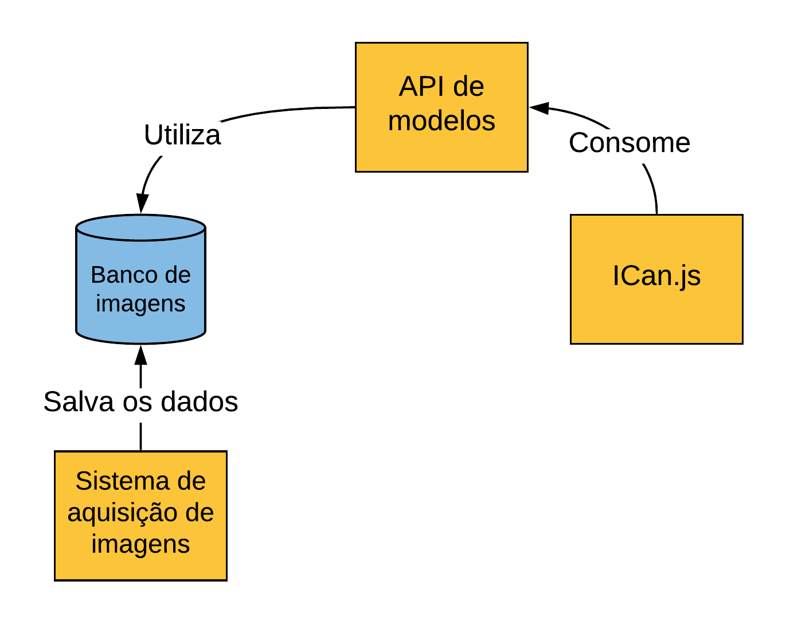

ICan.js é uma biblioteca que através de técnicas de Aprendizado Profundo traz recursos assistivos para as páginas da web. Sua criação foi realizada durante o desenvolvimento do Trabalho de Graduação do Felipe Menino Carlos (Fatec-SJC).
A biblioteca foi criada utilizando o conceito de camadas de funcionalidades, desta forma a biblioteca possui duas camadas sendo elas Core e Common, todas estas trabalhando sobre o Tensorflow.js.
Na camada Core estão os recursos indispensáveis para o funcionamento da biblioteca, como os modelos de rede neural, regressões e manipulação dos dispositivos webcam do usuário. Já na camada Common existem os recursos assistivos criados utilizandos as funcionalidades criadas na camada Core junto a biblioteca P5.js. O ICan.js possui as seguintes funcionalidades disponíveis para uso:
Funcionalidade para permitir o controle dos movimentos em um website através de gestos da cabeça
Funcionalidade para a escrita de textos em campos de páginas web com gestos de Libras
Para utilizar o ICan.js será necessário apenas baixar o arquivo da biblioteca aqui e importar em seu HTML, como demonstrado abaixo:
<script src="icjs.js"></script>
Para demonstração do funcionamento da biblioteca há alguns exemplos criados, sendo eles:
O ICan.js é um projeto que possui um pequeno ecossistema que acabou sendo desenvolvido durante a implementação da biblioteca. Através do diagrama abaixo é possível visualizar este ecossistema.
A biblioteca ICan.js consome a API de modelos, que realiza a distribuição dos modelos treinados para o reconhecimento de gestos, modelos estes que, para serem treinados utilizaram um banco de imagens adquiridas com o sistema de aquisição de imagens
Para acessar a documentação clique aqui. Caso queira colaborar com a documentação será bem legal, para isto abra uma issue no repositório do projeto